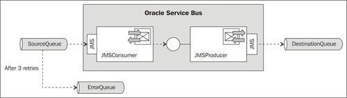
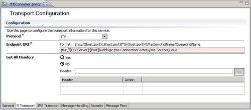
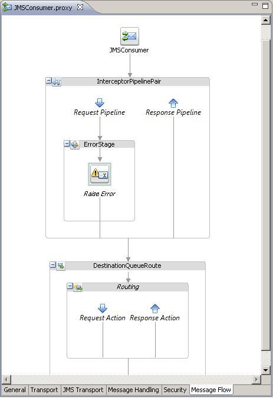
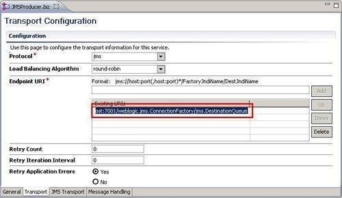
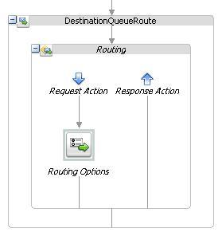
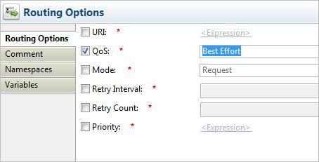

This recipe will show the different error scenarios, which we can have with XA and non XA enabled resources and how QoS can influence this.
For this recipe, we will use a setup with three queues from the standard environment, a proxy service that consumes messages from a JMS queue, and a business service that sends the messages to another JMS queue:

You can import the OSB project into Eclipse from \chapter-10\getting-ready\working-with-global-transactions-and-qos.
First, we will show you the behaviour of the service without a global transaction.
In Eclipse OEPE, perform the following steps:
jms://[OSBServer]:[Port]/weblogic.jms.ConnectionFactory/jms.SourceQueue
ErrorStage. APP-00001 to the Code field and An error occurred! into the Message field:
jms://[OSBServer]:[Port]/weblogic.jms.ConnectionFactory/DestinationQueue:
Now it's time to test the behavior. In WebLogic console, perform the following steps to add a message to the SourceQueue:
3 into the Redelivery Limit field.<message>OSB Cookbook</message> into the Body field and click on OK.The message is lost because the processing of the proxy service has been done in a local transaction. Because of the error, the OSB transaction rolls back, but the consumption from the SourceQueue has happened in a different transaction and was already commited, so the message is lost!
Now let's change the setup to use a global transaction. In Eclipse OEPE, perform the following steps:
jms://[OSBServer]:[Port]/weblogic.jms.XAConnectionFactory/SourceQueue jms://[OSBServer]:[Port]/weblogic.jms.XAConnectionFactory/DestinationQueueLet's now retest the behavior by adding a message to the SourceQueue. In WebLogic Console perform the following steps:
3 into the Redelivery Limit field.<message>OSB Cookbook</message> into the Body field and click on OK.This time the processing of the proxy service is in the same global transaction as the consummation of the queue. Therefore, the message is rolled back and three times a redelivery is tried. After that the message is sent to the ErrorQueue.
We have moved the ErrorStage into the response processing. Therefore, the routing to the business service has already happened. Because the enqueue of the message to the DestinationQueue happens in the same global transaction, it is also rolled-back, and no message can be found in the DestinationQueue.
Now let's change the setup and enable QoS. In OEPE, perform the following steps:


Let's test the behavior of the new settings again. Add a message to the SourceQueue by performing the following steps in the WebLogic Console:
3 into the Redelivery Limit field.<message>OSB Cookbook</message> into the Body field and click on OK.By setting the QoS setting in the Routing Options to Best Effort, we force the business service not to use the global transaction. This means that the enqueue of the message into the DestinationQueue happens in its own local transaction and is therefore, commited independently of the global transaction. Because the global transaction retries three times, we get four messages in the DestinationQueue, one for the original request and three for the retries. This is probably not the behavior we want and therefore, we have to be careful when using the Best Effort QoS setting.
When we use XA-enabled resources, enable Same Transaction For Response, and use Exactly Once QoS on the outbound transport, every resource will be rolled-back in case of an error in the Request or Response lane. To make this work, we should check if we are using a XA or non-XA resource and what the value of the QoS is, otherwise the resource won't take part in the global transaction.
In this recipe, we don't need to set QoS to Exactly Once because this is the default value when we use JMS with a XA Connection Factory as inbound transport.
To know the QoS values of your proxy service, we can read the following transport variables:
$inbound/ctx:transport/ctx:qualityOfService$outbound/ctx:transport/ctx:qualityOfServiceThe inbound variable value can't be changed and OSB uses the inbound value as a default value for the outbound transport. We can change the outbound QoS value with a Routing Options action.
Only use the Exactly Once of QoS when there is a transaction involved. The following inbound transports such as e-mail, FTP, File, JMS/XA, SFTP, and Transactional Tuxedo can start a transaction and have Exactly Once as the default value of QoS. This is because the E-mail, FTP, and File transport internally use a JMS queue with a XA Connection Factory.
In case of a Publish or a Service Callout action, the default value of QoS is always Best Effort. This means in case of a JCA resource such as a DB or an AQ adapter we need to set the dataSourceName property of the resource adapter and not using the xADataSourcename property, otherwise we will get a runtime error. If the Publish or Service Callout action should be part of the global transaction, then use the Routing Options action and set the QoS to Exactly Once. In the case of a JCA adapter, we need to use the xADataSourceName property of the resource adapter.
If our business service Publish action or Service Callout does not support XA, then with each retry of the proxy service, the service will be invoked. This can lead to many duplicate messages or invokes.
We can also force this behavior in a XA-enabled business service by adding a Routing Option in the Request Action of the Route Node. In the Routing Options, you need to enable QoS and set it to Best Effort. With Best Effort, the resource won't take part in the global transaction even when XA is enabled.